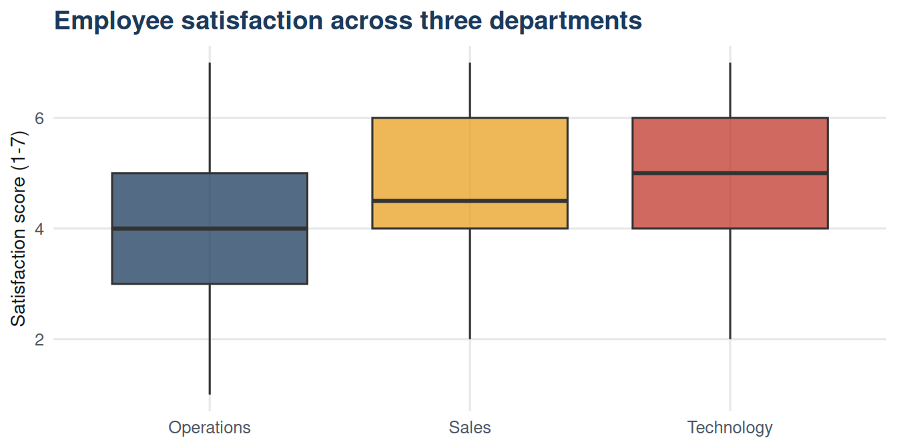

| Parametric equivalent | Non-parametric alternative | Use when |
|---|---|---|
| One-sample t-test | Wilcoxon signed-rank test | One sample; ordinal data or small n from non-normal population. |
| Independent samples t-test | Mann-Whitney U test | Two independent groups; ordinal data or non-normal small samples. |
| Paired t-test | Wilcoxon signed-rank test | Two related measurements; ordinal data or non-normal small samples. |
| One-way ANOVA | Kruskal-Wallis test | Three or more groups; ordinal data or non-normal small samples. |
26 Chapter 26: Mann-Whitney, Wilcoxon, Kruskal-Wallis, and Friedman Tests
26.1 Learning objectives
By the end of this chapter, the student should be able to:
- Explain when non-parametric tests are preferred over their parametric equivalents.
- Conduct and interpret the Mann-Whitney U test and the Wilcoxon signed-rank test.
- Conduct and interpret the Kruskal-Wallis test as a non-parametric ANOVA.
- Conduct and interpret the Friedman test for related samples.
- Select the appropriate test for a given research question and data type.
26.2 Introduction
The t-tests and ANOVA in Chapters 22 to 24 assume that the outcome variable is approximately normally distributed (or that the sample is large enough for the CLT to compensate). When these conditions cannot be justified - with small samples from clearly non-normal populations, or with ordinal data - non-parametric tests provide valid alternatives. They work by ranking the observations rather than using their raw values, and are therefore robust to outliers and skewed distributions.
The dataset for this unit contains employee records from three departments, with ordinal satisfaction and wellbeing scores (1 to 7) measured before and after a wellbeing intervention.
26.3 When to use non-parametric tests
26.4 Mann-Whitney U test (two independent groups)
The Mann-Whitney U test compares the distribution of ranks between two independent groups. It tests whether one group tends to have higher values than the other.
\[H_0: \text{the two populations have the same distribution}\] \[H_1: \text{one population tends to have higher values}\]
Code
library(dplyr)
dept_AB <- df |>
filter(department %in% c("Operations","Sales"))
mw_result <- wilcox.test(
satisfaction ~ department,
data = dept_AB,
alternative = "two.sided",
exact = FALSE
)
mw_summary <- dept_AB |>
group_by(department) |>
summarise(n = n(),
median = median(satisfaction),
IQR = IQR(satisfaction))
knitr::kable(mw_summary,
col.names = c("Department","n","Median satisfaction","IQR"),
caption = "Table 26.2: Satisfaction medians for Mann-Whitney test") |>
kableExtra::kable_styling(bootstrap_options = c("striped"),
full_width = FALSE)| Department | n | Median satisfaction | IQR |
|---|---|---|---|
| Operations | 60 | 4.0 | 2 |
| Sales | 60 | 4.5 | 2 |
Code
cat("\nMann-Whitney U test:\nW =", mw_result$statistic,
"\np-value =", round(mw_result$p.value, 4), "\n")
Mann-Whitney U test:
W = 1325
p-value = 0.0106 For non-parametric tests, report the median and IQR rather than mean and SD.
26.5 Wilcoxon signed-rank test (paired/one-sample)
The Wilcoxon signed-rank test is the non-parametric equivalent of the paired t-test. It ranks the absolute values of the differences and uses the signs to test whether the differences are systematically positive or negative.
Code
wilcox_result <- wilcox.test(
df$wellbeing_after,
df$wellbeing_before,
paired = TRUE,
alternative = "greater",
exact = FALSE
)
diff_summary <- data.frame(
Statistic = c("n pairs", "Median difference (after - before)",
"V statistic", "p-value (one-tailed)"),
Value = c(nrow(df),
round(median(df$wellbeing_after - df$wellbeing_before), 2),
round(wilcox_result$statistic, 1),
round(wilcox_result$p.value, 4))
)
knitr::kable(diff_summary,
col.names = c("Statistic","Value"),
caption = "Table 26.3: Wilcoxon signed-rank test: wellbeing before vs after") |>
kableExtra::kable_styling(bootstrap_options = c("striped"),
full_width = FALSE)| Statistic | Value |
|---|---|
| n pairs | 180.0 |
| Median difference (after - before) | 1.0 |
| V statistic | 7307.5 |
| p-value (one-tailed) | 0.0 |
26.6 Kruskal-Wallis test (three or more groups)
The Kruskal-Wallis test is the non-parametric equivalent of one-way ANOVA. It tests whether at least one group tends to have different values from the others.
Code
kw_result <- kruskal.test(satisfaction ~ department, data = df)
dept_medians <- df |>
group_by(department) |>
summarise(n = n(), median_sat = median(satisfaction),
IQR_sat = IQR(satisfaction))
knitr::kable(dept_medians,
col.names = c("Department","n","Median satisfaction","IQR"),
caption = "Table 26.4: Satisfaction by department (Kruskal-Wallis)") |>
kableExtra::kable_styling(bootstrap_options = c("striped","hover"),
full_width = FALSE)| Department | n | Median satisfaction | IQR |
|---|---|---|---|
| Operations | 60 | 4.0 | 2 |
| Sales | 60 | 4.5 | 2 |
| Technology | 60 | 5.0 | 2 |
Code
cat("\nKruskal-Wallis test:\nH =", round(kw_result$statistic, 3),
"\ndf =", kw_result$parameter,
"\np-value =", round(kw_result$p.value, 4), "\n")
Kruskal-Wallis test:
H = 19.85
df = 2
p-value = 0 
26.8 Effect size for non-parametric tests
For the Kruskal-Wallis test, \(\eta^2_H\) can be approximated as:
\[\eta^2_H = \frac{H - k + 1}{n - k}\]
where \(H\) is the test statistic, \(k\) is the number of groups, and \(n\) is the total sample size.
Code
H <- kw_result$statistic
k <- length(unique(df$department))
n <- nrow(df)
eta2_H <- (H - k + 1) / (n - k)
cat("Eta-squared (Kruskal-Wallis) =", round(eta2_H, 3), "\n")Eta-squared (Kruskal-Wallis) = 0.101 26.9 Summary
Non-parametric tests analyse ranks rather than raw values, making them robust to outliers, skewed distributions, and ordinal data. The Mann-Whitney U test replaces the independent t-test; the Wilcoxon signed-rank test replaces the paired t-test; the Kruskal-Wallis test replaces one-way ANOVA; the Friedman test replaces repeated-measures ANOVA. These tests are less powerful than their parametric equivalents when parametric assumptions hold but become preferable when assumptions are clearly violated.
26.10 Key terms
| Term | Definition |
|---|---|
| Non-parametric test | A hypothesis test that makes no distributional assumptions; operates on ranks. |
| Mann-Whitney U test | Non-parametric test for two independent groups; equivalent to the independent t-test. |
| Wilcoxon signed-rank test | Non-parametric test for paired or one-sample data; equivalent to the paired t-test. |
| Kruskal-Wallis test | Non-parametric test for three or more independent groups; equivalent to one-way ANOVA. |
| Friedman test | Non-parametric test for three or more related measurements; equivalent to repeated-measures ANOVA. |
| Rank-based analysis | Converting observations to their rank order before computing the test statistic. |
26.11 Exercises
Using Table 26.4, which department has the highest median satisfaction? Is the Kruskal-Wallis result significant at \(\alpha = 0.05\)?
A researcher collects Likert-scale satisfaction ratings (1 to 5) from two independent groups of 12 participants each. Should she use an independent t-test or a Mann-Whitney U test? Justify your answer.
Using Table 26.3, did the wellbeing intervention produce a significant improvement? Report the result completely including the median difference.
When would you prefer a parametric test over a non-parametric alternative, even with ordinal data? What does the parametric test gain?
The Kruskal-Wallis test is significant. What additional step is needed to identify which specific departments differ?